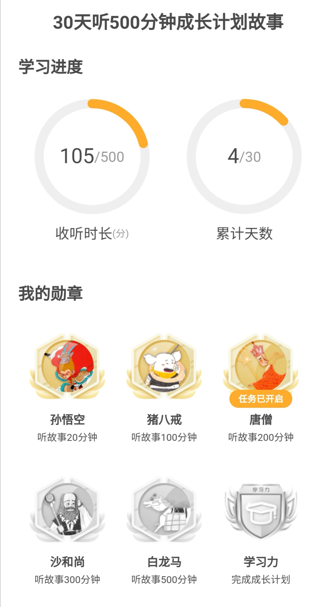
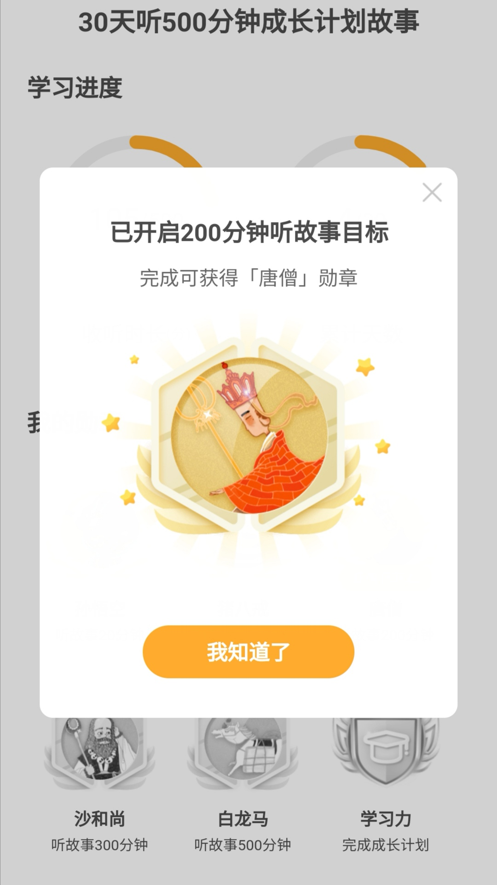
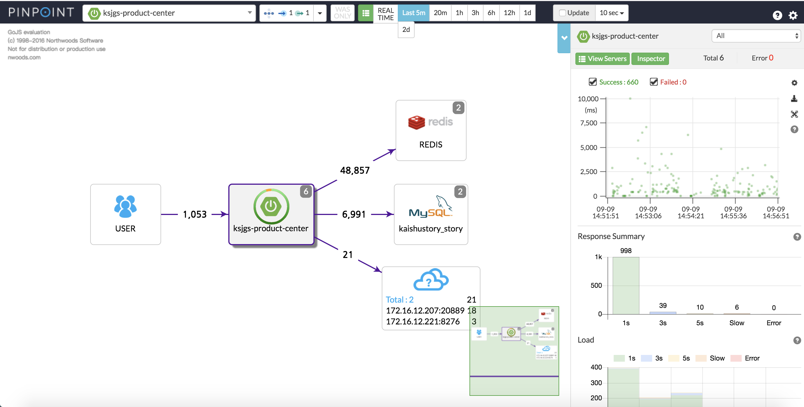
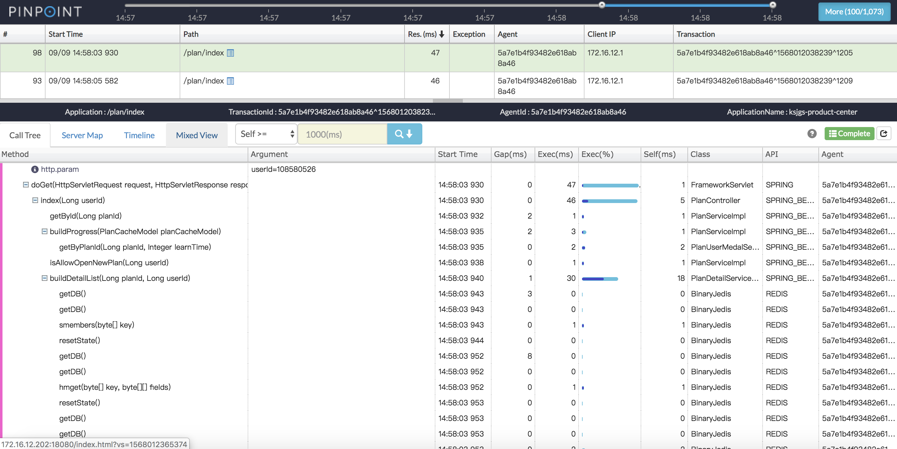
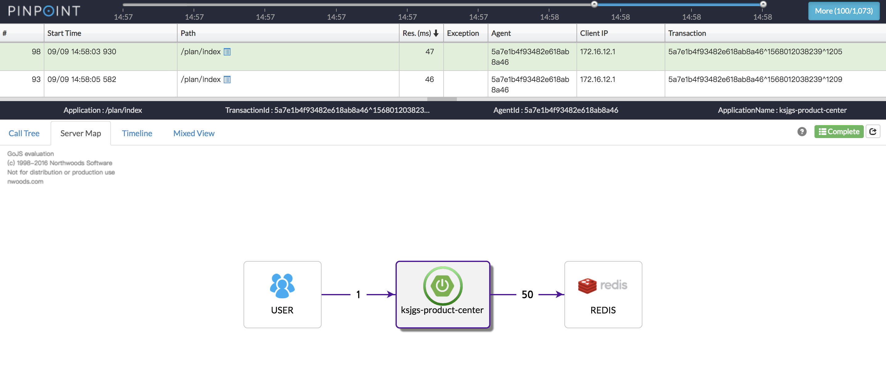
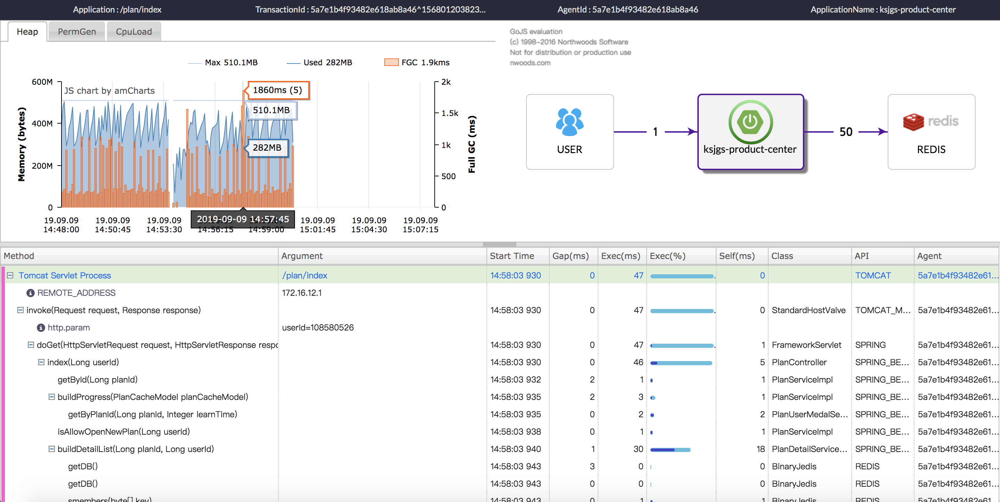
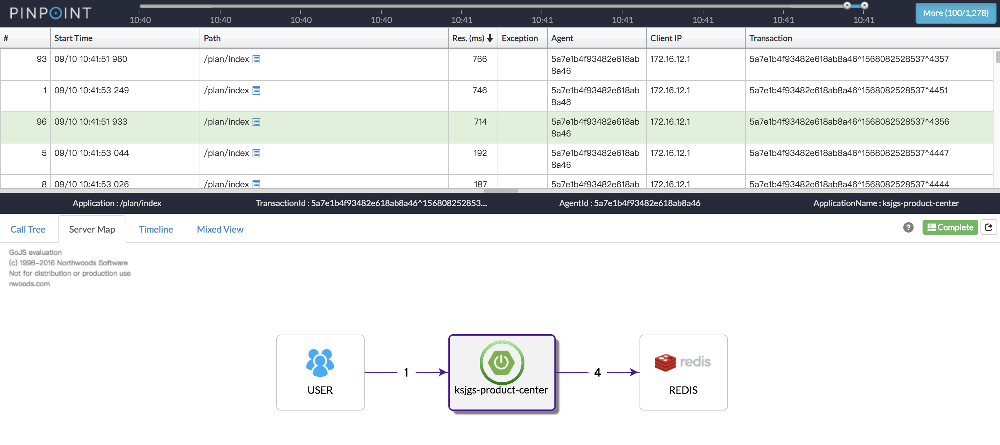
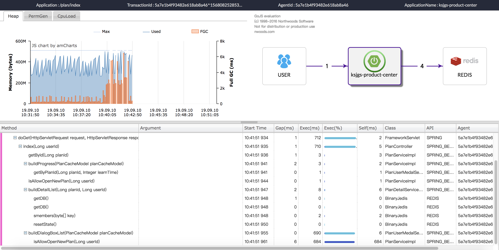
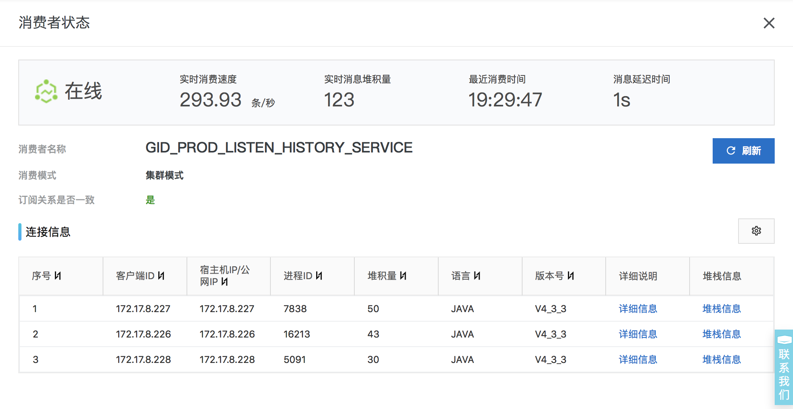
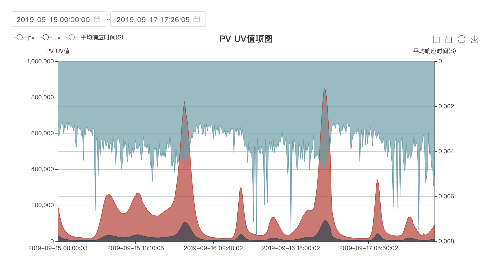

1. 需求简介
根据用户的测试情况，给他推荐相应的课程，然后根据学习时长可以获得勋章
2. 效果图

3. 功能拆解
3.1. 测试题
【要点】
1、 需要一个题库，配好题目和答案选项；
2、需要根据用户的答题情况（分数）抽取一定量的各种类型的题目
3、本次抽取的题目与上一次的题目重复率不得超过50%
4、提交答案
【难点】
这个功能最复杂的地方在于重复率不得超过50%，可以用两次的题目去交集来判断，也可以排除上一次的题目后再随机，没有用什么高深的算法（主要是不懂）这里我用的后者，不再赘述。
3.2. 生成计划
【要点】
1、从大数据那里获取推荐内容
2、上一个计划未完成不允许开启下一个计划
3、同种勋章只能获得一次
4、保存数据（计划、计划详情、勋章、消息）
【难点】
1、调大数据的接口时要考虑到失败的情况，即使大数据的服务挂了，咱们也不能挂，为此加上try...catch，超时时间等等都是必要，这还不够。万一调大数据失败了，返回保底数据。
2、考虑到重复提交的情况，需加分布式锁
3.3. 计划首页
【要点】
1、内容展示，包括分已购未购、免费付费、会员非会员、标签等等
2、学习时长展示，包括时长、天数、当前阶段、勋章等等
【难点】
1、查数据库想都不要想，首选直接查Redis，但是Redis查的次数多了综合起来也有可能慢，必要时可考虑本地缓存（内存缓存）
2、时长、天数等均从在Redis总累计，可直接获取
3.4. 学习时长
【要点】
1、实时记录
【难点】
1、线上类似的接口高峰时段可达到1分钟84万次请求，因此想都不用想，必须异步，我们采用MQ
2、尽管消费者是一条一条的消费，然而这并不意味着一秒钟只消费一条，据观察，线上其它类似MQ消费者平均一秒钟消费300条
3、时长最终是要更新到MySQL数据库中的，但是如此频繁的写数据，风险比较大，想来想去，最终选择用定时任务在夜深人静的时候从Redis同步到MySQL
4、学习时长是一个特别重要的参数，关系到挑战任务，关系到勋章，因此以秒为单位，累计至1分钟再写入
5、在压测的时候，我发现基于Redis的分布式锁似乎并不能保证完全100%锁住，虽然概率极低，但我好像碰到了
3.5. 楼层
【要点】
1、根据用户计划的状态展示不同的按钮及背景图
2、连续关闭两次楼层后不再出现，新开启计划后再次出现
【难点】
1、用户关闭楼层的行为直接记到Redis中，不必存数据库
3.6. 弹窗
【要点】
1、每个挑战任务对应一个勋章，再加上最后一个奖励勋章。任务是有顺序的，因此弹窗也是，为此需要知道任务前后的关系
2、每个弹窗只弹一次，因此需要记录用户是否查看过
【难点】
1、用双向链表将挑战任务串联起来，这样就可以根据当前所处阶段快速找到上一个或下一个任务
2、在Redis缓存结构上，我犯了一个错误。原因我想的是既然是有顺序的要不就用List类型，但是后来发现更新的时候极其不方便，要把所有的元素先删除（LTRIM命令），然后修改后重新插入，在一次压测过程中发现里面大量重复数据，还没删完就已经插入了，于是越插入越多，这就是偷懒的代价，最终紧急改成Hash类型，这样即使有重复也会被覆盖。
3.7. 通知消息
【要点】
1、APP消息和站内信都要发
2、不用的阶段的消息文案不一样
【难点】
1、定时任务扫描
2、异步发送，保证互不影响
4. 压测
所有的Redis查询都是批量查询，即使是这样，响应时间依然很长，平均响应时间400ms左右。用PinPoint分析排查：




后来，加上了本地缓存Caffeine，感觉快了很多


顺便看下其它指标

